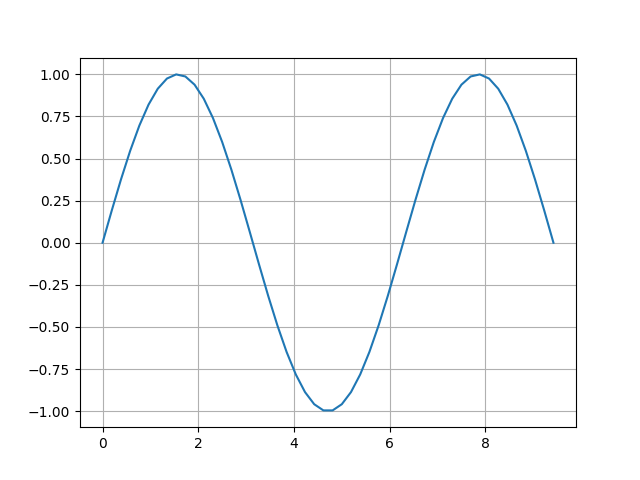

matplotlib 시작하기¶
시각화 패키지 설치하기¶
matplotlib은 파이썬을 위한 시각화 도구입니다. 각종 그래프와 그림, 다이얼로그등을 다루는 것을 목적으로 합니다. 추가로 설치하는 NumPy와 SciPy는 수치해석, 통계, 과학 등을 위한 각종 함수와 데이터형을 제공합니다.
여기서는 파이썬으로 그래프를 그리는데 필요한 패키지를 설치하고 패키지가 제대로 설치되었는지 확인하도록 합니다.
앞으로의 실습에 필요한 matplotlib과 numpy, scipy를 설치합니다. 구글 코랩(Google Colab)이나 아나콘다(Anaconda)를 사용하는 경우, 이 패키지들은 미리 설치되어 있으니 굳이 설치할 필요가 없습니다.
PIP 설치 및 업그레이드
python3 -m pip install --upgrade matplotlib numpy scipy
아나콘다(Anaconda) 설치 및 업그레이드: 보통은 기본으로 설치되어 있습니다.
conda install --upgrade matplotlib numpy scipy
리눅스 설치
sudo apt update && sudo apt upgrade
sudo apt install python3-matplotlib python3-numpy python3-scipy
NumPy는 수치해석 및 행렬연산을 위한 다양한 도구와 새로운 자료형 등을 제공합니다. NumPy 설명서를 통해서 상세한 기능들을 살펴볼 수 있습니다. SciPy는 과학을 위한 특수함수 및 통계 등을 제공합니다. SciPy 설명서를 통해서 상세한 설명을 살펴볼 수 있습니다.
그래프 그리기 실습¶
matplotlib는 너무 복잡한 모듈과 설정을 가지고 있어서 수업에는 쉽고 단순한 인터페이스를 제공하는 pyplot모듈을 이용합니다.
import matplotlib.pyplot as plt
x = [1, 2, 3]
y = [3, 1, 4]
plt.plot(x, y)
plt.show()

위 예제를 실행하면 새로운 창에 그림과 같은 그래프를 포시합니다. 아나콘다(Anaconda)의 스파이더(Spyder) 편집기를 사용하거나 구글 코랩(colab) 등 주피터 노트북(Jupyter notebook)기반의 편집기에서 실행하는 경우 결과 표시 창에 그래프를 출력합니다.
matplotlib의 예제(Example)과 튜토리얼(Tutorials) 문서들을 통해 다양한 그림을 작성하는 방법을 배울 수 있습니다.
함수의 그래프 그리기¶
$\sin(x)$ 함수를 지정한 범위 $[0, 3 \pi]$ 의 그래프로 출력합니다.
 1import numpy as np
2import matplotlib.pyplot as plt
3
4
5def func(x):
6 """$f(x)$ 함수"""
7 return np.sin(x)
8
9if __name__ == "__main__":
10 x = np.linspace(0, np.pi * 3)
11 plt.plot(x, func(x))
12 plt.grid(True)
13 plt.savefig("EX1_plotting_function.png")
np.linspace(0, 3)은 0부터 3사이 숫자를 일정 간격으로 50개(기본값) 만들어 numpy의 array 자료형으로 출력합니다. 출력 결과는 [0.00, 0.06, 0.12,..] 형태입니다.
np.linspace(xmin, xmax, ndata)는 xmin 부터 xmax 사이 숫자를 일정 간격으로 ndata 개수만큼 생성하여 numpy 의 array 자료형으로 출력합니다.
plt.grid(True)를 사용하여 그래프에 격자 보조선을 넣을 수 있습니다.
데이터 파일을 읽고 그래프로 그리기¶
데이터파일인 data.csv 은 아래와 같이 공백으로 구분한 두 실수로 작성되어 있습니다.
이 파일의 첫 번째 열은 x값 두 번째 값은 y값이라고 약속했을 때 이 데이터를 그래프로 그리려고 합니다.
10.0202184 1.0819082
20.07103606 0.87027612
30.0871293 1.14386208
1import os
2import matplotlib.pyplot as plt
3
4x = []
5y = []
6
7data_path = os.path.join(os.path.abspath(os.path.dirname(__file__)), "data.csv")
8
9with open(data_path, "r") as f:
10 for line in f.readlines():
11 items = line.split(" ")
12 x.append(float(items[0]))
13 y.append(float(items[1]))
14
15if __name__ == "__main__":
16 plt.scatter(x, y)
17 plt.xlim(0, 1)
18 plt.ylim(-1.5, 1.5)
19 plt.grid(True)
20 plt.savefig("EX2_plotting_data.png", bbox_inches="tight")
히스토그램 그리기¶
데이터파일인 hist_data.csv 는 1904줄의 1차원 배열이며 각 줄마다 측정한 수치가 들어있습니다.
18.119651934101998592e+00
21.008247783750474191e+01
34.341979401586036680e+00
1import os
2import numpy as np
3import matplotlib.pyplot as plt
4
5data_path = os.path.join(os.path.abspath(os.path.dirname(__file__)), "hist_data.csv")
6
7if __name__ == "__main__":
8 data = np.loadtxt(data_path)
9 n, bins, p = plt.hist(data, bins=40, color="#00796B")
10 plt.title("Energy Spectrum")
11 plt.xlabel("Energy(keV)")
12 plt.ylabel("Intensity #")
13 plt.xlim(0, 12)
14 plt.grid()
15 plt.savefig("EX3_histogram.png", bbox_inches="tight")